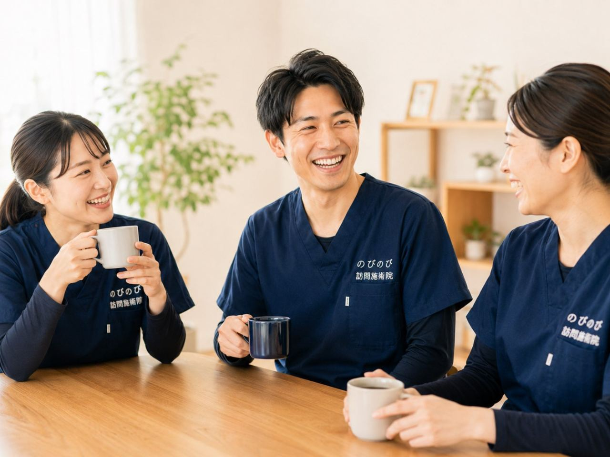

腰から足にかけての痛みやしびれが長引き、大阪市淀川区での通院がつらくなってきた、そんな方やご家族に向けた記事です。ご自宅で受けられる淀川区の訪問鍼灸マッサージという方法があること、慢性の坐骨神経痛や腰痛が医療保険の対象になる条件と費用、そして「先に医療機関へ行くべきサイン」までを、順を追ってやさしくご説明します。外に出るのがおっくうな日でも、住み慣れたお部屋で施術を受けられます。
この記事のポイント
慢性の坐骨神経痛や腰痛症は、医師が必要と認めれば医療保険の対象になります。費用は1回の総額3,950円、1割の方でおよそ395円で、別途の出張費はエリア内一律でかかりません。介護保険の限度額とは別枠で、要介護認定も不要ですが、医師の同意書は必要です。国家資格者が腰から脚全体をていねいにみます。ただし急な足の脱力や排尿・排便の異常があるときは、鍼灸より先に医療機関を受診してください。
淀川区で坐骨神経痛・腰の痛みに悩む方が、自宅で受けられるケア
お尻から太ももの裏、ふくらはぎへと電気が走るような痛みやしびれ。片脚だけがつらく、朝の歩き出しや椅子から立ち上がる瞬間に「うっ」と身構えてしまう。淀川区で長く坐骨神経痛や慢性的な腰の痛みを抱えていらっしゃる方から、そんな声をよく伺います。新大阪や十三の周辺は電車もバスも便利な街ですが、痛みが強い日は駅までの数百メートルさえ遠く感じるものです。のびのび訪問施術院では、国家資格を持つ施術者がご自宅へ伺い、腰から脚にかけての状態をていねいにみていきます。通院という一歩が負担になっている方に、家で続けられる選択肢をご用意しています。
坐骨神経痛と腰の痛みは、どんなときに強くなるのか
坐骨神経痛は病名というより、腰から脚へ伸びる神経が刺激されて起こる痛みやしびれの総称です。腰椎まわりの変化が引き金になることが多く、多くの場合は片脚性で、座り続けたあとや前かがみ、歩き出しの一歩目に痛みが出やすいのが特徴です。デスクワークや長時間の運転で同じ姿勢が続く方、冷えると症状がつらくなる方もめずらしくありません。淀川区は西中島南方や東三国のあたりにオフィスや集合住宅が多く、座位中心の生活で腰に負担を溜めている方が目立ちます。ご自宅で伺うと、普段どんな椅子に座り、どんな動作でつらくなるのかまで一緒に確認できるのが訪問の強みです。症状をさらに詳しく知りたい方は「坐骨神経痛・長引く腰の痛み」もあわせてご覧ください。
急な脱力や排尿・排便の異常があるときは、先に医療機関へ
坐骨神経痛のなかには、すぐに医師の診察が必要なものも含まれます。両脚に力が入らない、急な脱力が起きた、尿や便が出にくい・漏れるといった変化があるときは、鍼灸やマッサージより先に整形外科などの受診をおすすめします。鍼とお灸はあくまで医療機関の治療を支える補助的なケアであり、病気そのものを治すものではありません。効き方には個人差があります。だからこそ、私たちは無理に施術だけで抱え込まず、必要なときには受診をおすすめする立場を大切にしています。淀川区での訪問全般については大阪市淀川区の訪問鍼灸マッサージで詳しくご紹介しています。
淀川区のご自宅で、腰から脚全体をゆるめていく施術
お伺いするのは三国や塚本、加島、宮原、木川、田川、十八条、新北野といった淀川区の各エリア。オートロックのマンションや集合住宅でも、事前にご連絡いただければスムーズに玄関先まで伺えます。施術ではお尻や太もも裏のこわばり、腰椎まわりの緊張、冷えて硬くなったふくらはぎなどを、鍼・お灸・手技で少しずつゆるめていきます。あわせて、寝返りや立ち上がりが楽になるよう関節や筋肉を動かす機能訓練も、鍼灸に加えるケアとして行っています。これらに追加の料金はかかりません。歩き出しの一歩や前かがみの動作がどう変わるか、毎回一緒に確かめながら進めます。
保険と費用｜淀川区でも料金は一律
坐骨神経痛や慢性の腰痛は、医療保険はり・きゅうの対象となる6つの疾病（神経痛・リウマチ・頸肩腕症候群・五十肩・腰痛症・頸椎捻挫後遺症）のうち「神経痛」や「腰痛症」の枠で該当しうる症状です。ご利用には医療保険（療養費）と医師の同意書が必要で、要介護認定は不要です。介護保険の限度額とは別枠のため、デイサービスなどと併用できます。ただし同一部位の医療保険リハビリと鍼灸を同じ月に同時に算定することはできません。費用は1回総額3,950円で、自己負担は1割で約395円。週2回のペースなら1割の方で月約3,160円が目安です。淀川区のエリア内は出張費なしで料金は一律です。仕組みの詳細は「料金はいくら？医療保険の自己負担額と仕組み」を、伺える範囲は「対応エリアはどこまで来てもらえる？」をご覧ください。
坐骨神経痛や腰の痛みは、一度で劇的に変わるものではなく、生活の中で少しずつ折り合いをつけていくものだと感じています。冷えを避け、同じ姿勢を続けすぎないといった小さな工夫を、施術のたびにお一人おひとりの暮らしに合わせてお伝えしています。通院の負担をなくし、家で続けられるケアをお探しの淀川区の皆さまは、どうぞ気軽にご相談ください。
よくある質問
以前から続く坐骨神経痛でも、保険で受けられますか？
急に起きた強い痛みではなく、慢性的に続く坐骨神経痛や腰痛について、医師が鍼やお灸での治療を必要と認めて同意書を書いてくれ、かつ通院がむずかしい状態であれば、医療保険の対象になります。まずは今の状態と通院の状況をお聞かせください。
費用は1回いくらですか？
1回の施術の総額は3,950円で、自己負担は負担割合の分だけです。1割の方でおよそ395円が目安です。別途の出張費はエリア内一律でかかりません。
介護保険の限度額を使い切っていても受けられますか？
受けられます。訪問鍼灸マッサージは医療保険で受けるため、介護保険の区分支給限度額とは別枠です。他の在宅サービスをご利用中でも、限度額に影響しません。
要介護認定を受けていないと利用できませんか？
要介護認定は不要です。医師が慢性の坐骨神経痛や腰痛症について鍼灸を必要と認め、同意書を書いていただければご利用いただけます。認定の有無は問いません。
鍼やお灸で坐骨神経痛は治りますか？
診断と治療の中心は医療機関で、鍼灸は補助的なケアです。骨や椎間板の変化そのものを元に戻すものではありませんが、こわばった筋肉を和らげ、しびれや重だるさが楽に感じられる方はいます。感じ方には個人差があります。
どんなときは先に病院へ行くべきですか？
急に足に力が入らない、足首やつま先が上がらない、尿や便が出にくい・漏れる、発熱を伴う強い腰の痛み、安静にしても強くなる痛みがあるときは、鍼灸より先に整形外科などを受診してください。神経が強く圧迫されているサインのことがあります。
淀川区のどのあたりまで来てもらえますか？
淀川区内は全域で対応しています。十三や新大阪、三国、東三国、西中島、塚本、神崎川のあたりなど、区内であればお住まいの場所を教えていただければ調整します。マンションの上の階でも伺います。
寝たきりや、座った姿勢のままでも受けられますか？
受けられます。あお向けで寝たまま、いすに座ったままなど、その方の楽な姿勢に合わせて施術します。痛みのない範囲で無理なく進めますので、ご安心ください。